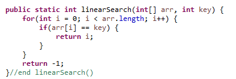
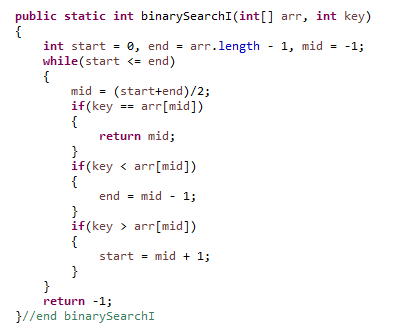
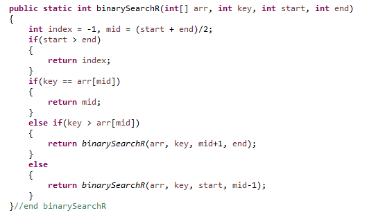

Searching
There are two searching algorithms we learned in class.
Linear Search and Binary Search
Linear Search:
Linear search is an algorithm that sequentially checks each element in the list until the correct element has been found.
The linear search algorithm takes in an array of size n, and a key. A for loop will loop through each element in the array
until the key has been found, or until its get to the end. If it does not find the key, -1 will be returned. If it does,
the index of the key will be returned.
Implemetation of Linear Search

Just like the name suggests, the
worst case time complexity for linear search is O(n), because for an input size of n, the for loop will iterate n times.
The
best case time complexity is O(1), if the key is in the beginning of the array.
Binary Search:
Binary search is an algorithm that is used to search for an element in a sorted array by continually dividing the array into halfs.
Since the array is sorted, we can compare the key to the middle element which will tell us which half the key is in. This checks is repeatedly
done until the index of the key is found, or if the key does not exist in the array.
Implemetation of Binary Search
There are two ways of implementing binary search. It can be done iteratively, or recursively.
The key is compared with the middle element, and if they are equal, the index of the middle element is returned.
If the key is less than the middle, the end of the array becomes the middle - 1. If the key is greater than the middle,
the start of the array becomes the middle + 1. Then, this is repeated until the key is found using a loop, or using recursion.
Iterative Binary Search:

Recursive Binary Search:

The
worst case time complexity is O(logn).
After some number (x) of iterations, the length of the array is 1.
After each iteration, the array is divided in half. Thus, the length of the array after x iterations is
n / 2
x, where n is the length of the array. But, after x iterations, the length is 1. Therefore,
n / 2
x = 1
n = 2
x
x = log
2n
The
best case time complexity is O(1), where the middle element is the key.
Binary search is much faster than linear search, because as the input size grows, linear growth is much
faster than logarithmic growth, meaning the run time of linear search is much larger as well.
The caveat is that the array must be sorted before hand. Sorting an array also has a computational complexity.
Sorting
There are five sorting algorithms we learned in class.
Selection Sort, Insertion Sort, Bubble Sort, Quick Sort, and Merge Sort.